Home (Japanese Page)
JavaScript Scripts for Adobe Illustrator 10 - CS5
This archive includes following sample scripts (not well commented yet confused)
tested with Adobe Illustrator CS5, Windows XP SP3 (Japanese version).
Free to use and distribute.
- # General Note For Usage
- Adjust Dashes (offset)
- Adjust Dashes
- Arc Correction
- Archimedean Spiral
- Arrow-A, Arrow-V
- Circle
- Circumcircle
- Common Tangents
- Cut At Selected Anchors
- Dance
- Divide (length)
- Dup At Selected Anchors
- Extend Handles
- Join Reasonably
- Merge Overlapped Anchors
- Metaball (Arc), Metaball
- Path Length
- Remove Anchors
- Reverse
- Round Any Corner
- Sine Curve
- Tangents From A Point
- Tree-like
The archive "jsx_lf.zip" includes the same scripts as "...js" but ".jsx" extension and unix newline (LF).
Maybe suitable for Mac.
Author : Hiroyuki Sato - pub.hiro.s@to.email.ne.jp
# General Note For Usage
• How to Use the Scripts
Choose File>Scripts>Browse, and open the script to run.
Or place the script in the directory "Adobe Illustrator CS5\Presets\<your locale>\Scripts", then restart Illustrator.
Download the PDF documents for more information.
http://www.google.com/search?q=site:www.adobe.com+illustrator+CS5+javascript
"Adobe Illustrator CS5 Scripting Guide"
"Adobe Illustrator CS5 Reference: JavaScript"
• Selection of part of a path
Some scripts work only for selected anchor points or sides
(= lines, bezier curve segments).
A side (= a line, a bezier curve segment) means one of each line segment
drawn to connect a couple of anchor points.
In other words, selected parts means targets for Cut or Copy command.
Regular (or Group) Select Tool selects whole of a path. - [fig.]
• A Compound Path Issue
Some scripts don't work for some part of compound pathes.
When this occurs, please select part of the compound path or release the compound path and
select them, then run script again.
I still have not figured out how to get properties from grouped pathes inside a compound path.
Adjust Dashes (offset)
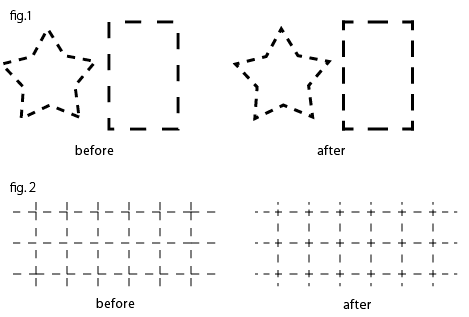
fig.1 : This script adjusts dashed lines in the selection in order to the center of the first dash comes at each anchor points.
For its purpose, when adjacent segments of an anchor of the target path have a difference in length -- a rectangle like above, for example --, this script splits the path at this anchor, applies a suitable dash setting for each splitted path, then put them into a group. This is a lockstep trick caused by an Illustrator path can have only one simple rule for dashes and gaps. This process also CLEARS FILL COLORS, if it needs, and if the pash has BUTT end cap, change it to PROJECTION end cap.
fig.2 : The left figure is splitted with pathfinder ( outline ), in order to make anchors at all intersection points.
Adjust Dashes
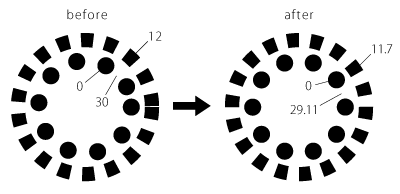
adjusts the lengths of dashes and gaps of dashed lines
in order to the length of the path is divisible by
total length of dashes and gaps
Arc Correction
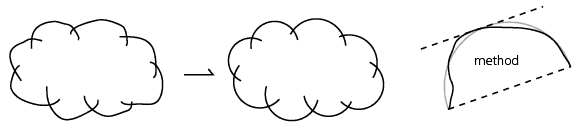
corrects free-hand drawn arc-like pathes in the selection.
To use, just select the pathes and run this script.
For the (not need-to-know) detail of the method, please read the comments inside of the script with above figure.
Archimedean Spiral

draws an (approximate) Archimedean spiral.
Arrow-A, Arrow-V
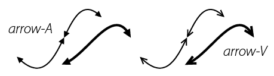
draws arrow for each selected end (anchor) of the selected pathes.
"A" and "V" mean the shape of the head of the arrow.
The visible peaks of arrows exactly locate at each visible end of the selected pathes.
The end of pathes are trimmed in order to avoid sticking out from the head of the arrow.
The path with projection end cap is modified to but end cap.
Circle
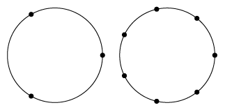
draws a circle with specified number of anchor points.
Circumcircle
draws circumcircles for each selcted path
Method:
The major reason why I wrote this script is to draw a "circumcircle" for a star.
So the method to find the center and the radius for the circumcircle is rather incertitude.
- find out a perpendicular bisector for the line connecting 1st and 2nd anchor
- do the same for 1st and 3rd anchor (if the path is a triangle, 2nd and 3rd anchor)
- find out intersection point of 1 and 2. for the center of the circumcircle to draw
- find out the length of the line connecting the center and 1st anchor, then do the same for the center and 2nd anchor. define longer one as the radius of the circumcircle to draw.
The rightmost one in the figure above is a case of failure.
Common Tangents

draws common tangents to the selected curved lines, if they are detected.
Cut At Selected Anchors
cuts selected pathes at each selected anchor
Dance

adds a new layer and draws dancing people on it
### notice
The dancers are made with various width of lines.
So please be careful about the setting of Scale Tool
when you want to scale them.
Divide (length)
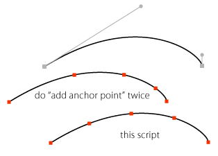
divides each selected segment into specified number. based on the length.
Length of each segment in each divided segments is equal.
Dup At Selected Anchors

duplicates the foreground object in the selection
at the locations of the rest of each selected anchor points.
Extend Handles
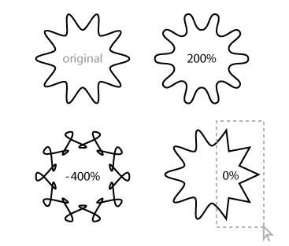
extends all handles of selected anchor points with specified rate.
100 : original size
120 : extend 20%
80 : shorten 20%
0 : remove handles
-100 : reverse handles
Join Reasonably
joins the open pathes in the selection together with reasonable order
Merge Overlapped Anchors
merges nearly overlapped anchor points.
also reports how many anchor points had been reduced.
USAGE: Select the path(es) and run this script.
Metaball (Arc), Metaball
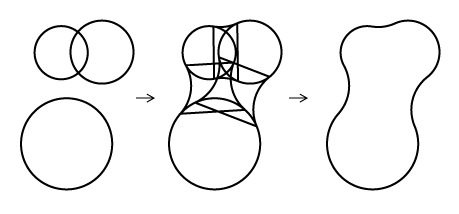
This script may help to create Metaball-like shapes
"Metaball (Arc)" uses arcs to connect. "Metaball" uses suitable bezier curves.
USAGE : Draw some circles and select them, then run this script.
When a prompt appears, type in an optional value for the the connecting curves, then click OK.
// (it doesn't check in the script whether each path is really a circle)
# Combining the shapes using Pathfinder may results several overlapping
anchor points on the path. if it occurs, it may help to solve it to
use my another script "Merge Overlapped Anchors.js".
This is a simple sample script that merges overlapping anchors on the path.
Path Length
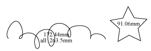
finds out length of the each selected path, and total length of the selected pathes.
Then write out them on the artboard as text object
This script uses JavaScript's "length" property of PathItem. if it is available (= CS3 or later). You can force calculate the length by "use_native_property" setting set to false. ( see inside the script )
NOTE:
The return values of "PathItem.length" property and the function in this script
are slightly different especially in complex pathes.
It seems that the difference is 0.05 millimeter at most.
Remove Anchors
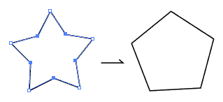
removes selected anchor points
Reverse
reverses the order of the anchor points of each selected pathes
2009-05-23: comment-out showing alert part
Round Any Corner

rounds selected corners of PathItems.
Especially for the corners at the intersection point of curves,
this script may work better than "Round Corners" filter (but slower).
## How To Use
## Illustrator CS
1. Select the anchor(s) or whole path(es) to round.
2. Run this script. A prompt box appears to set the rounding radius.
Input the radius in point, then click OK.
#. You can choose a behavior like Illustrator10 by change the setting.
(-- see "setting" section inside the script)
## Illustrator 10
1. Select the anchor(s) or whole path(es) to round
WITH a foreground path that specifies the rounding radius.
Half width of foreground path is used for the radius. (excluding stroke width)
Using a circle is most suitable for intuitive understanding and ease of use.
The script asks you to continue if there's a difference greater than 1 pt
between width and height of foreground path.
2. Run this script. The foreground path is removed after rounding.
#. When the number of selected path is 1, predefined radius is used
for rounding. (-- see "setting" section inside the script)
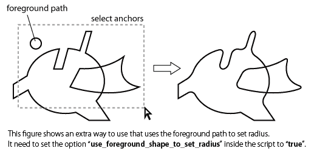
## Rounding Method
Basically, the rounding method is compatible with the "Round Corners" filter.
It is to add two anchors instead of the original anchor, at the points of
specified line length from each selected corner. So if there're too many
anchors on original path, this script can not round nicely.
## Radius
Actually, the specified "radius" is not for a radius of arcs which drawn.
It is for the line length from each selected corner and is for the base
to compute the length of handles. The reason calling it "radius" is
for compatibility with the "Round Corners" filter.
This script does not round the corners which already rounded.
(for example, select a circle and run this script does nothing)
### notice
In the rounding process, the script merges anchors which nearly
overlapped (when the distance between anchors is less than 0.05 points).
This script does not work for some part of compound pathes.
When this occurs, please select part of the compound path or release the compound path and
select them, then run script again.
I still have not figured out how to get properties from grouped pathes inside a compound path.
Sine Curve
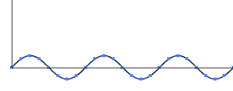
draws (approximate) sine curve at bottom left of the artboard
The values of the coordinates are based on Don Lancaster's Guru's Lair Cubic Spline Library.
Tangents From A Point
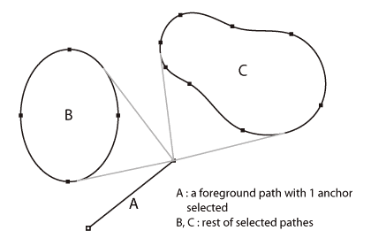

draws tangent lines from a selected anchor point to selected curved segments.
This script tries to find a path with only 1 anchor selected,
from foreground to background. And specifies the selected point
of the path as starting point of tangents.
"the selected curved segments" means rest of the selected pathes.
You can use an isolated point as the starting point.
In this case, starting isolated point is removed after drawing tangents.
Drawn tangents have handles at ends.
So you can move the starting side of anchor point with keeping tangency.
Tree-like
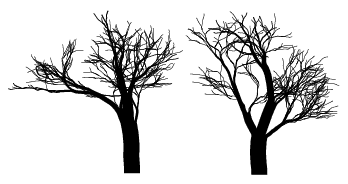
draws a tree-like shape at the center of the artboard
### notice
The trees are made with various width of lines.
So please be careful about the setting of Scale Tool
when you want to scale them.